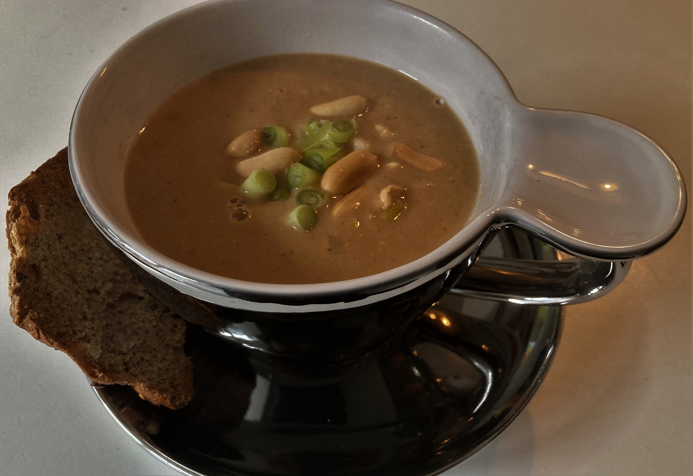

Pindasoep met zelfgemaakte pindakaas
Ingrediënten pindakaas
- 300 gram doppinda’s
- eventueel een héél klein snufje zout
Bereiding pindakaas
- rooster de pinda’s in een droge koekenpan (zonder boter of olie) tot ze lichtbruin zijn
- doe de pinda’s in een blender en
- maal totdat je pindakaas hebt
- tussendoor zo nu en dan even stoppen om de blender wat af te laten koelen
Ingrediënten pindasoep
- 350 à 400 gram kipfilet
- 2 kleine preien
- 2 sjalotjes
- 2 teentjes knoflook
- 2 bosuitjes
- 1 rode peper
- 0,750 liter water
- 1 kippenbouillonblokje
- 250 ml kokosmelk
- 150 gram zelfgemaakte pindakaas
- 1 à 2 eetlepels zonnebloemolie
- een paar (achtergehouden) geroosterde pinda’s
- klein zakje kroepoek
- versgemalen peper
- eventueel een snufje zout
Bereiding pindasoep
- snijd eerst de kipfilet in blokjes
- verhit dan 1 eetlepel olie in een ruime (soep)pan en
- bak hierin de kipfilet ongeveer drie minuten
- breng op smaak met wat peper en eventueel wat zout
- was de prei, halveer deze over de lengte en snijd er halve ringen van
- halveer de peper, haal de zaadlijsten eruit en snijd de peper in kleine stukjes
- pel de sjalotjes en snijd deze in ringen
- pel de knoflook en snijd deze fijn
- snijd de bosuitjes in kleine ringetjes
- bak de prei, de peper, de sjalotjes en de knoflook ongeveer twee à drie minuten mee
- voeg de kokosmelk, het bouillonblokje, het water en de zelfgemaakte pindakaas toe
- laat dit alles een minuut of vijftien op een laag vuurtje koken
- schenk de soep daarna in een soepkom
- garneer met wat bosuitjes en geroosterde pinda’s en
- geef er wat kroepoek bij
Download